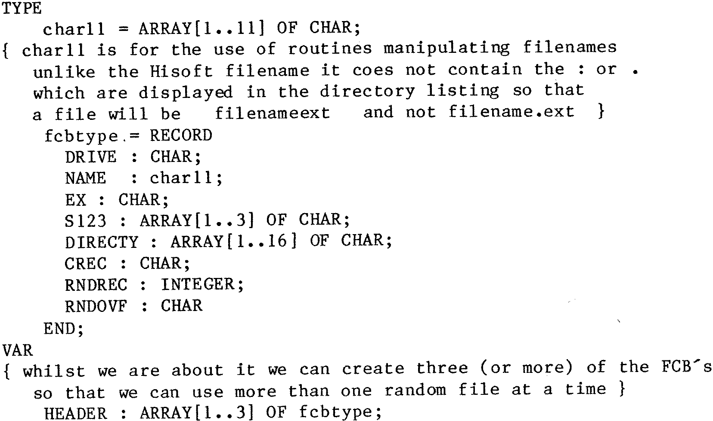

80-Bus News |
September–October 1984 · Volume 3 · Issue 5 |
| Page 4 of 47 |
|---|
I am a Nascom 2, Gemini 64K RAM card, GM829 FDC and Gemini IVC user. I am running CP/M 2.2 with Pertec FD250 drives.
I purchased surplus Pertec drives from the USA and had lots of problems. All the problems were a result of leaky decoupling capacitors. For those of you who intend to purchase surplus FD250, I suggest that all the decoupling capacitors should be replaced. Other than this, the drives are great.
There is a simple hardware and software modification to get these drives reading and writing 40 tracks instead of 35 tracks. Though I have done this independently, I understand “Henry’s” is offering this modification. For those of you who are interested, please write and I will send full details.
Those of you who intend to make the printer-buffer as published in the June 1984 issue of BYTE, please note that the PIO output of the Nascom 2 or Gemini should be buffered and properly oriented with pull up resistors before it will work. I assume that the readers will have taken care of the other errors in the buffer hardware and software as published by BYTE
All correspondence on the above and other Nascom/Gemini subjects welcomed.
Yours truly, Hiten Patel, _ ______ _____, ___ __________ ____, BOMBAY ___ ___, India.
Following on from the random musings of Dr. Dark in the issue of July-August 1984, I am writing to tell of some procedures developed for just this need. The CP/M manual describes a file control block (FCB) which is used for random access, but this is not allowed for in the standard Hisoft Pascal file handler – the Pascal one is three bytes too short. So we want a definition of a FCB which can be used for random access, like this –
The other definitions of types and variables must be placed in the program as needed. The most important of these is a buffer area to store the record read from the file or about to be written to it. The simplest of
| Page 4 of 47 |
|---|